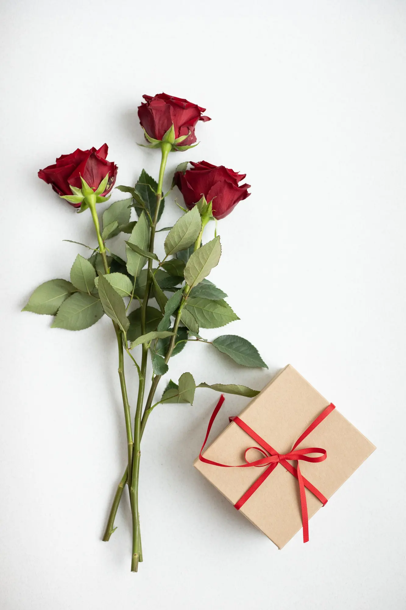
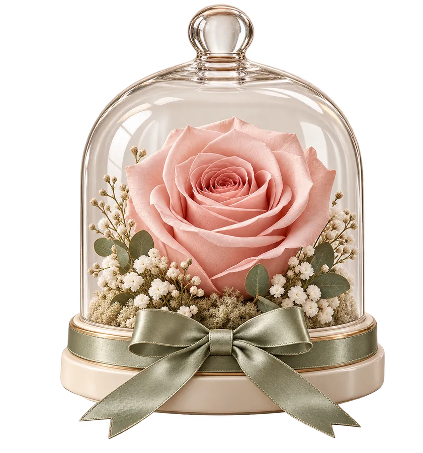

El motivo
Cumpleaños, aniversario, agradecimiento, nacimiento o simplemente porque sí.
Un detalle floral puede contar una historia completa cuando se acompaña de una presentación pensada para esa persona. Inspírate y consulta qué combinaciones se pueden preparar.

Imagen de bancoLas imágenes aportadas sugieren combinaciones de flores, peluches y rosas bajo cúpula. Son referencias visuales, no un inventario confirmado. Lo interesante de un pack es poder ajustar el gesto a la ocasión, al estilo de la persona y al presupuesto antes de decidir qué elementos lo componen.
Un regalo pensado de principio a fin.
Cumpleaños, aniversario, agradecimiento, nacimiento o simplemente porque sí.
Ramo fresco, planta, pieza preservada o complemento decorativo: pregunta qué es viable.
Color, envoltorio, tarjeta y tamaño pueden cambiar por completo la sensación final.
No hace falta conocer el nombre de cada flor. Basta con contar para quién es y cómo quieres que se sienta al abrirlo.
Un ramo fresco aporta un momento vivo y cambiante. Una planta acompaña durante más tiempo si su destinatario dispone de luz y tiempo para cuidarla. Una pieza preservada o decorativa funciona mejor cuando se desea un objeto de recuerdo. El complemento —peluche, tarjeta u otro detalle— debe sumar significado, no tapar la flor.
Sácalas del embalaje que impida ponerlas en agua. Usa un jarrón limpio; elimina hojas sumergidas y renueva agua y corte de tallos cada dos o cuatro días.
Identifica la especie y pide su pauta de luz, sustrato y riego. Comprueba que la maceta interior drene y no dejes agua acumulada en el cubremacetas.
No la riegues. Sitúala lejos del sol directo, humedad y fuentes de calor. Pregunta si el complemento es natural preservado o artificial.
Mantén el pack vertical, evita el calor del coche y abre con cuidado para no golpear la cúpula ni aplastar los pétalos. Sigue las instrucciones específicas que acompañen a cada pieza.
Pregunta qué especies incluye el arreglo. En particular, los lirios del género Lilium son tóxicos para gatos; conviene evitarlos si conviven con ellos.
El envoltorio presenta el regalo; el lugar donde se coloca lo convierte en parte de la casa.
Una composición pequeña saluda al entrar. Mantén libres llaves y objetos que puedan golpearla.
Un pack con flores frescas funciona bien en una mesa lateral fresca y luminosa, sin sol directo.
Una planta compacta o una cúpula pueden acompañar el trabajo sin invadir el espacio útil.
Si va a estar en una mesa de fiesta, consulta la altura para no tapar miradas ni conversaciones.



Comparte ocasión, fecha, estilo, presupuesto y preferencia por flor fresca, planta o pieza decorativa. La floristería podrá confirmar opciones reales.